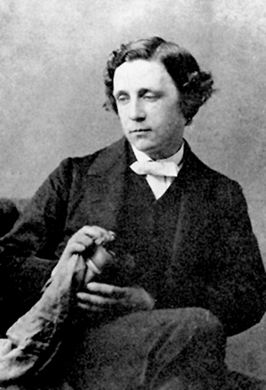

Engleski pisac i matematičar Lewis Carroll (pravo ime Charles Lutwidge Dodgson) svjetsku je slavu postigao djelima Alisa u zemlji čudesa i Alisa s one strane ogledala, ludičkim pričama u kojima ponajprije vladaju logika sna, apsurd i jezične igre. Hrvatska enciklopedija donosi pripovijest o ovome umjetniku domišljatosti i zaigranosti, o duhu koji je spojio logiku, matematiku i ljepotu riječi te zauvijek zadužio generacije djece i svih zaljubljenika u maštovite alegorije i logičke zavrzlame.
Carroll je rođen u konzervativnoj anglikanskoj obitelji. Zarana pokazuje zanimanje za matematiku, humor i jezičnu igru. Diplomirao je matematiku na Sveučilištu u Oxfordu. Još u djetinjstvu počeo je objavljivati tekstove u časopisima i satiričkim listovima. Godine 1856. prvi je put uporabio pseudonim Lewis Carroll, nastao inverzijom engleske inačice latinskoga prijevoda imena Charles Lutwidge (lat. Carolus Ludovicus).

No pravi je uspjeh i popularnost postigao pričom za djecu Alisa u zemlji čudesa. Objavio ju je u suradnji s ilustratorom Johnom Tennielom. Za razliku od dječje književnosti viktorijanskoga doba, Alisa nije sadržavala prepoznatljivu moralnu pouku. Umjesto realističkoga djela didaktične vrijednosti, Carroll je osmislio priču u kojoj junakinju radoznalost odvlači u čudesni podzemni svijet u kojem ne vrijede uvriježena pravila prirodnog i društvenog poretka. Osobita se važnost pridaje jeziku te pitanjima teksta i konteksta, čime se propitkuje racionalistička slika svijeta. Zbog toga se Alisa smatra djelom koje potiče kritičko mišljenje čitatelja svih dobi, te najčešće tumači kao parodija (ne)logične društvene zbilje, ili pak kao alegorija o djetetovu odrastanju u suštinski besmislenu svijetu odraslih. Alisa s one strane ogledala prikazuje Alisino snoliko putovanje u zemlju onkraj ogledala, u kojoj je sve, uključujući i vrijeme koje katkad teče unatrag ili unaprijed, brzo ili polako, poput zrcalnoga odraza postavljeno obrnuto.
Za života je stekao status književnoga velikana, no značaj mu se dodatno potvrdio tijekom XX. stoljeća, kada se uvidjelo da je umijećem nekonvencionalnog izraza umnogome anticipirao, pa i utjecao na avangardne, napose nadrealističke, a zatim i postmodernističke književne tendencije. Objavio je i niz knjiga iz područja matematike i logike, od kojih se ističu popularno-znanstvena djela Euklid i njegovi suvremeni suparnici te Simbolička logika. Razvio je više matematičkih algoritama, a osmislio je i više desetaka knjiga mozgalica i nekoliko kriptografskih sustava.
U Hrvatskoj su Alisu preveli Mira Šunjić, Mirko Jurkić, Mirjana Buljan, Antun Šoljan, Predrag Raos, Tatjana Kezele, Luko Paljetak i Borivoj Radaković.